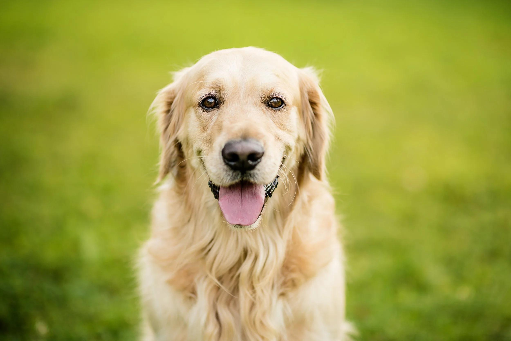
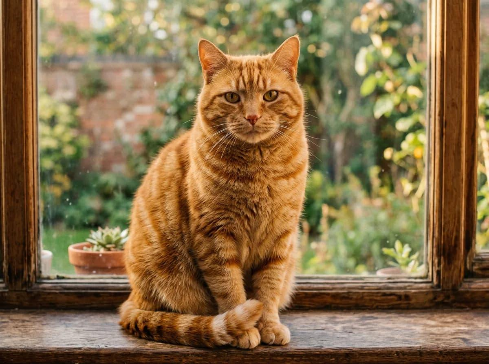
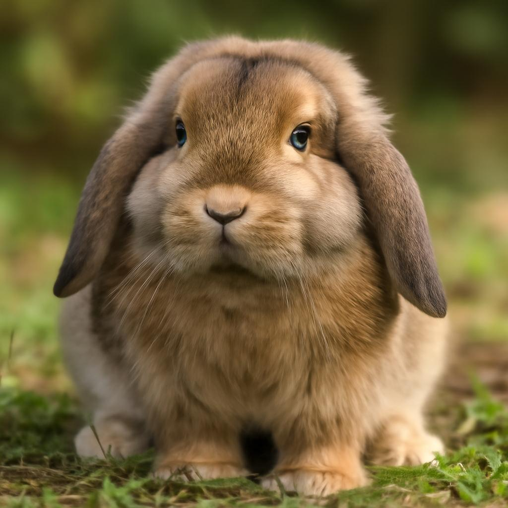

Unsere Tiere suchen ein Zuhause
Du möchtest einem Tier ein liebevolles Zuhause schenken? Dann bist du bei uns genau richtig! Hier stellen wir dir einige unserer tierischen Bewohner vor.

Balu
Hund | 3 Jahre
Balu ist ein freundlicher und verspielter Hund. Er liebt lange Spaziergänge und sucht eine aktive Familie.
Mehr über Balu erfahren ↓
Balu liebt Bewegung und gemeinsame Aktivitäten. Er würde sich besonders über Menschen freuen, die gerne Zeit in der Natur verbringen.

Mila
Katze | 2 Jahre
Mila ist eine neugierige und verschmuste Katze. Sie liebt gemütliche Plätze und freut sich über viel Aufmerksamkeit.
Mehr über Mila erfahren ↓
Mila sucht ihre neue Bezugsperson. Sie möchte gerne alleine gehalten werden, da sie sich leider nicht gut mit ihren Artgenossen verträgt.

Flocke
Kaninchen | 1 Jahr
Flocke ist ein ruhiges und neugieriges Kaninchen. Es sucht ein artgerechtes Zuhause mit mindestens einem passenden Artgenossen.
Mehr über Flocke erfahren ↓
Flocke liebt das Spielen mit seinen Artgenossen. Er braucht Spezialfutter aufgrund einer Vorerkrankung und sucht deshalb ein passendes Zuhause.
So funktioniert unsere Tiervermittlung
1. Tier entdecken
Schau dir unsere Tiere an und finde heraus, welcher tierische Bewohner zu dir passen könnte.
2. Kontakt aufnehmen
Wenn du Interesse an einem Tier hast, kannst du dich bei unserem Tierheim melden.
3. Kennenlernen
Bei einem persönlichen Kennenlernen können wir gemeinsam besprechen, ob das Tier zu dir passt.
Du hast deinen tierischen Begleiter gefunden? 🐾
Dann nimm Kontakt mit uns auf! Wir freuen uns darauf, dich kennenzulernen und deine Fragen zu beantworten.
Kontakt aufnehmen